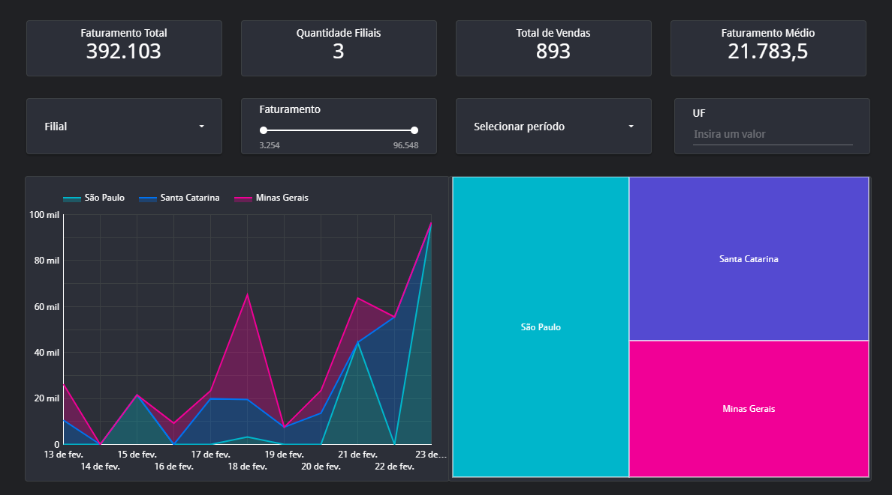
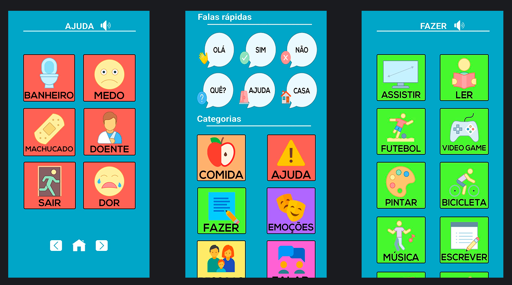
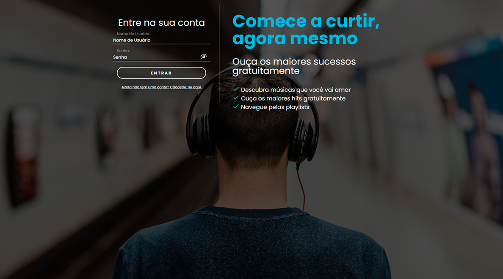

Meus Projetos
Relatório Financeiro (2024)

Extração de dados utilizando consultas e fórmulas em planilhas.
Integração com Google Planilhas, utilizado como fonte de dados.
Relatório feito com o uso da ferramenta Google Looker Studio.
Interativo e contém a funcionalidade de filtragem dos dados.
Veja detalhes aqui.
iWant 2.0 (2023)

Desenvolvido em uma plataforma de programação em blocos chamada Thunkable.
Para dispositivos móveis.
App desenvolvido para auxiliar portadores do TEA na comunicação.
Utilizado no Trabalho de Conclusão de Curso.
Artigo aprovado e publicado no 14º CONICT.
Veja aqui as especificações do projeto.
Publicação do artigo.
Piratefy (2022)

Player de música web inspirado no "Spotify".
Desenvolvido do zero em PHP, HTML, CSS, JS, MySQL e jQuery.
Colocado em operação na AWS durante período acadêmico.
Veja uma demonstração aqui.